Diccionario Lectura Facilitada
Agrupar
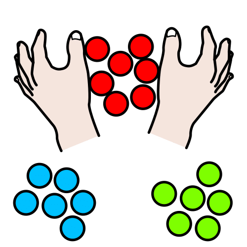Definición:
Formar grupos.
Ejemplo:
Agrupa los animales por el número de patas.
Anotar
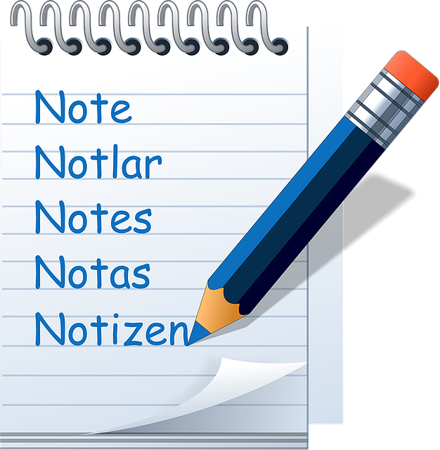Definición:
Escribir una cosa en un papel u otro soporte para recordarlo.
Ejemplo:
Anota el número de teléfono en este papel.
Atreverse
Definición:
Arriesgarse a hacer algo difícil.
Ejemplo:
Mi hermano se ha atrevido a cantar en la radio.
Brocheta
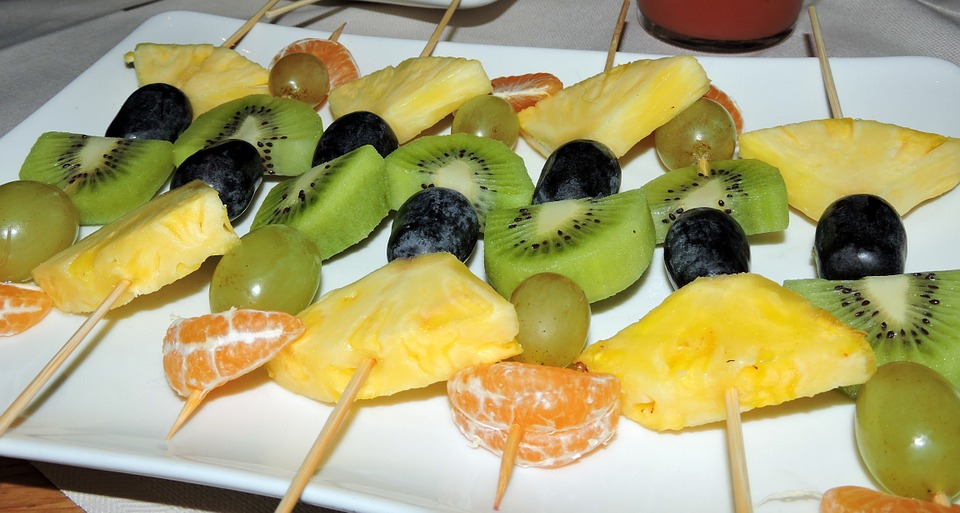Definición:
Varilla de metal o madera en la que se ensartan trozos de distintos alimentos.
Ejemplo:
Preparamos brochetas de frutas para la merienda.
Decena
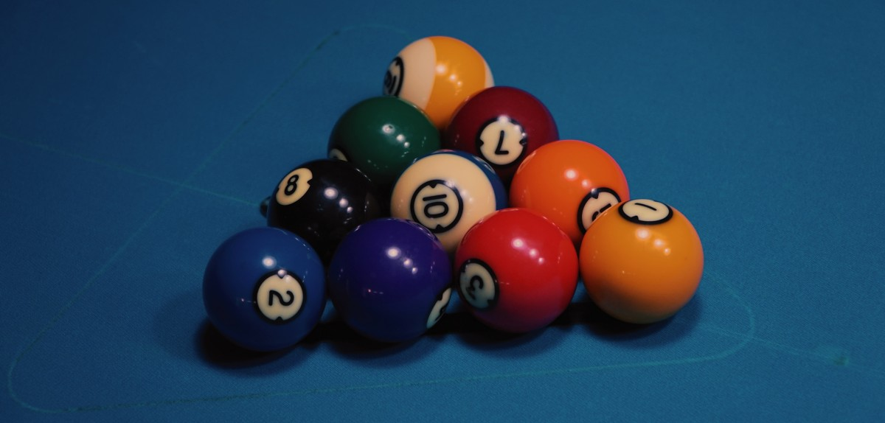Definición:
Conjunto formado por diez unidades.
Ejemplo:
La caja tiene una decena de bombones.
Descargar
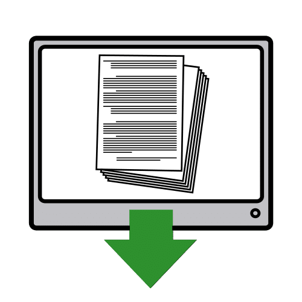Definición:
Pasar información de un aparato electrónico a otro.
Ejemplo:
Me he descargado unos juegos en la tableta.
Ensartar
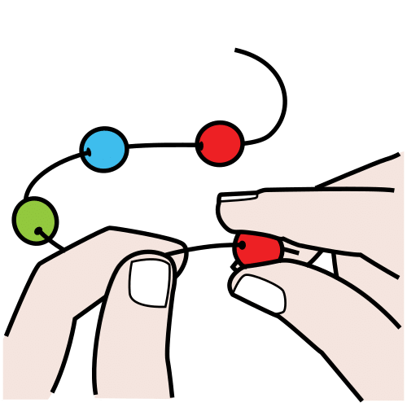Definición:
Pasar por un hilo, cuerda o alambre una serie de cosas.
Ejemplo:
Ensartamos las bolas para hacer una pulsera.
Guirnalda
 Definición:
Definición:
Corona o tira de flores, hierbas, ramos y otros materiales entretejidos.
Ejemplo:
Pondremos unas guirnaldas decorando la casa por Navidad.
Lienzo
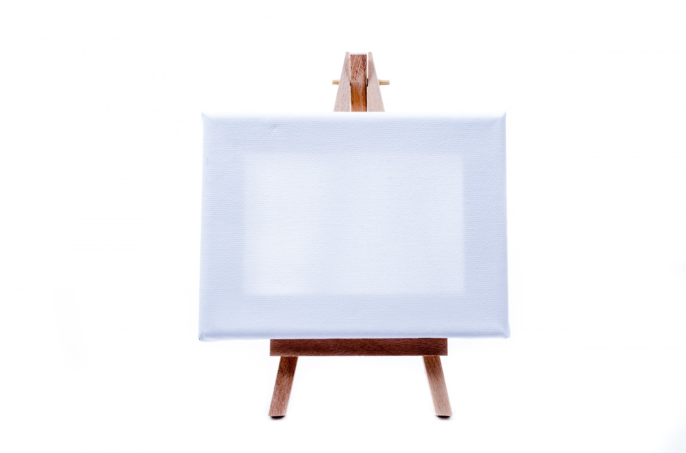Definición:
Tela preparada para pintar sobre ella.
Ejemplo:
Pintó en el lienzo un bonito paisaje.
Mural
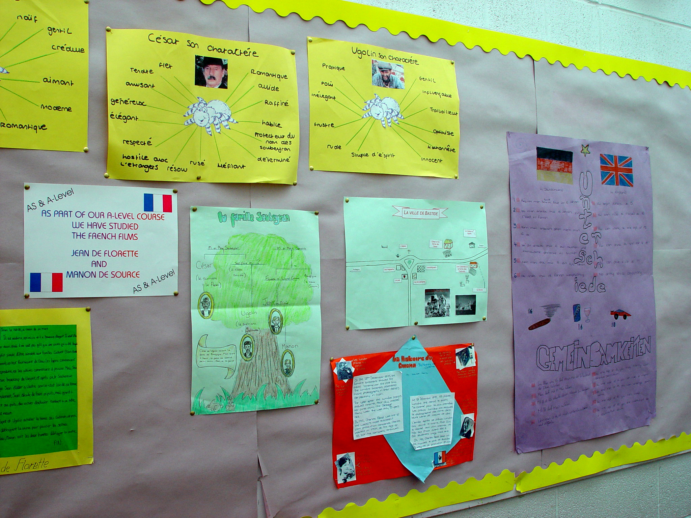Definición:
Pintura o decoración que se hace o se cuelga en un muro o pared.
Ejemplo:
Han colgado un mural en la plaza.
Organizar
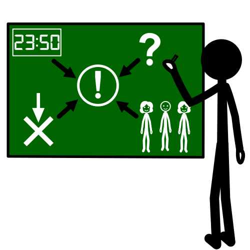Definición:
Poner orden. Preparar o estructurar.
Ejemplo:
Es difícil organizar la excursión.
Plantilla
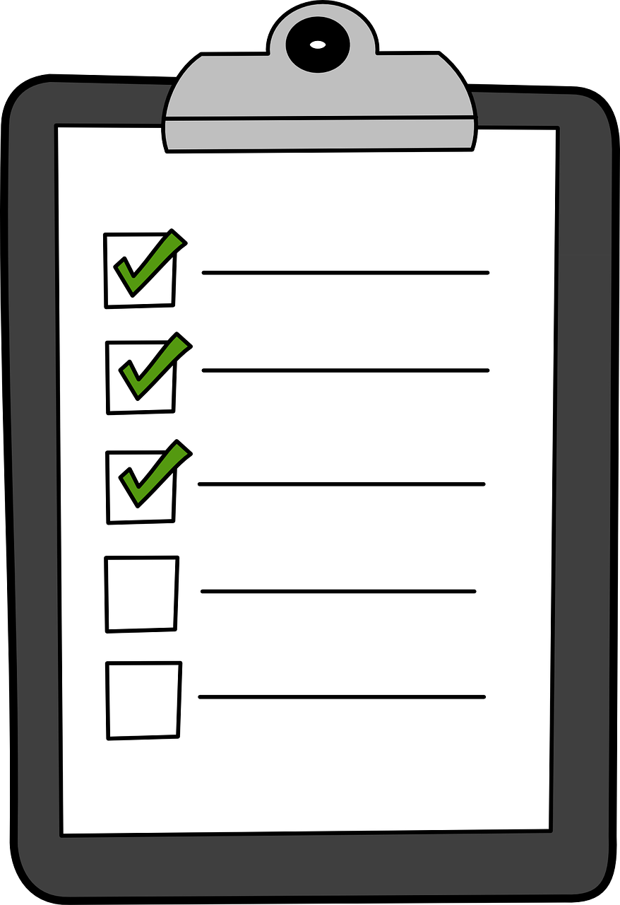Definición:
Modelo o guía de un escrito.
Ejemplo:
Usaremos esta plantilla para hacer la descripción.
Recuerdos
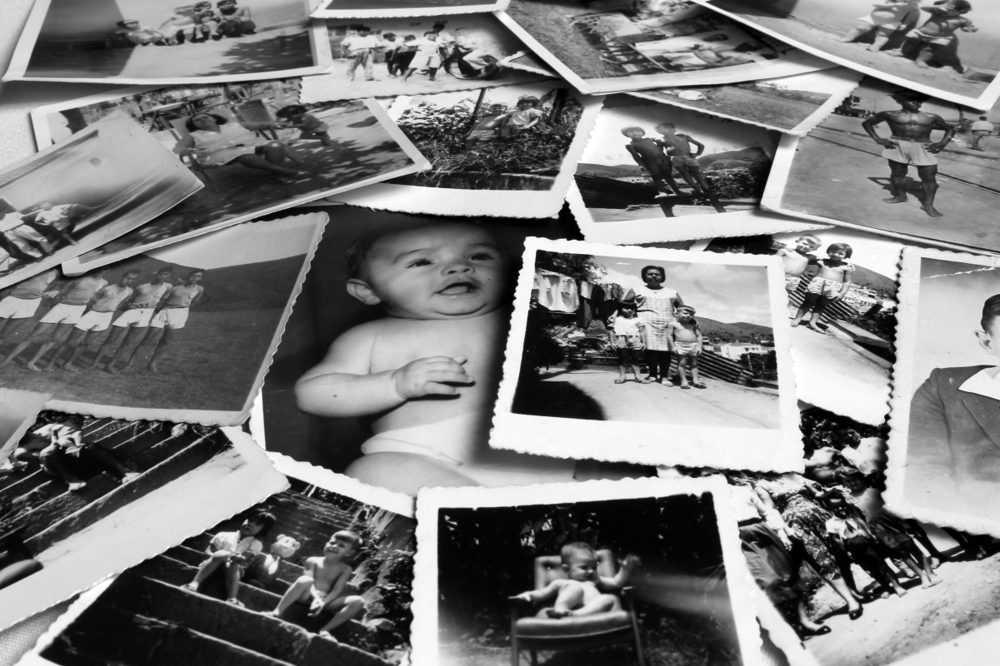Definición:
Objeto, generalmente un regalo, que sirve para recordar un lugar o a una persona.
Ejemplo:
Me dio este bolígrafo de recuerdo.
Regleta
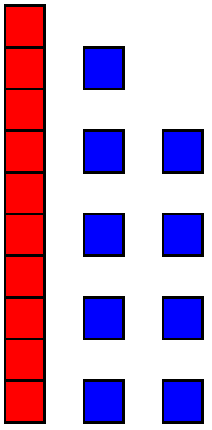Definición:
Barritas de distintos tamaños y colores, que representan los números del 1 al 10.
Ejemplo:
Usamos las regletas para hacer las tareas de Matemáticas.
Saludable
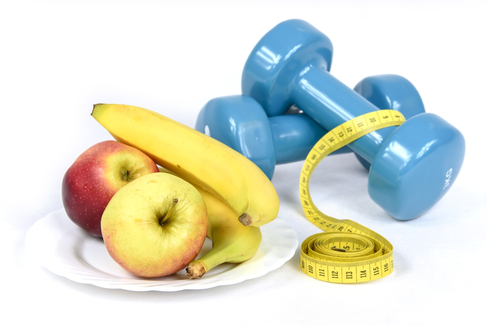Definición:
Que es bueno o beneficioso para la salud o que la proporciona.
Ejemplo:
Debemos comer alimentos saludables.
Truco
 Definición:
Definición:
Técnica o modo de hacer algo ingenioso o hábil para conseguir algo.
Ejemplo:
Mi hermano me enseñó un truco para hacer galletas.
Unidad
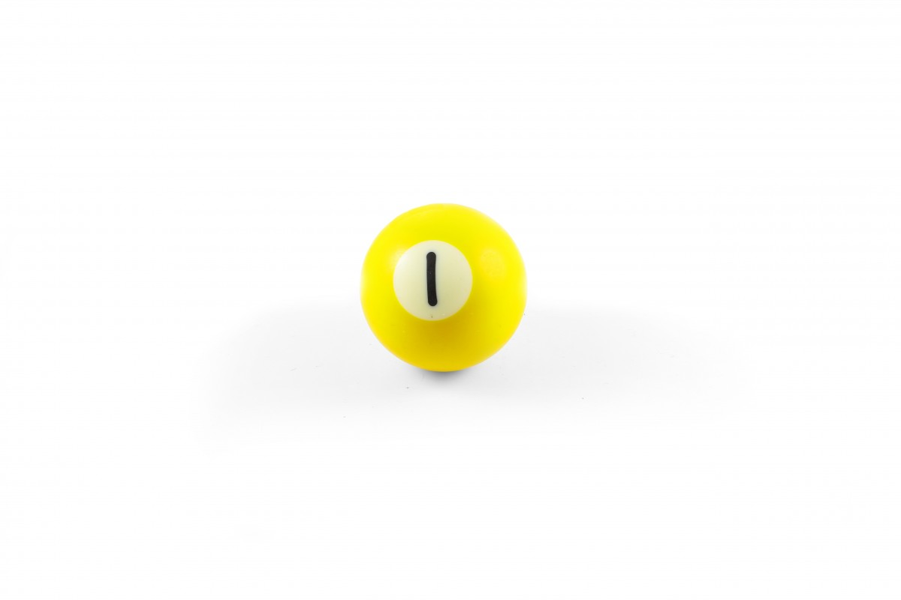Definición:
Cada elemento de un conjunto.
Ejemplo:
Las magdalenas se venden en paquetes de una unidad.
Vagón
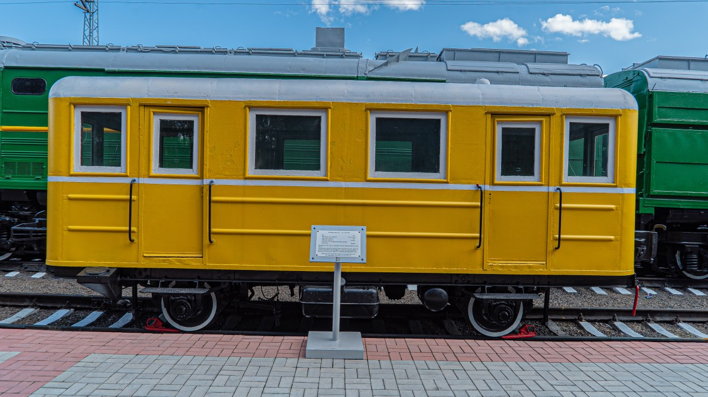Definición:
Cabina del tren que es arrastrada por la locomotora, donde viajan la carga o los pasajeros.
Ejemplo:
Los pasajeros subieron al vagón número dos.